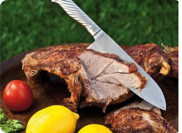
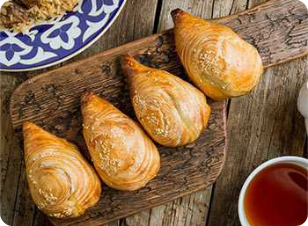

O'zbekiston taomlari
O‘zbek taomlari Markaziy Osiyodagi eng rang-barang ovqatlardan biri va dunyo taomlari orasida eng shirin, xilma - xil taomlardandir.
Biz haqimizda
Restaranimiz 2013 yil ochildi va 2020 yili eng katta milliy taomlar restaraniga aylandi, Restaranimiz
-

Qovurma shoʻrva — qoʻy yogʻi kubik qilib toʻgʻraladi va qozonga solib chalaroq eritiladi. Goʻsht boʻlaklarga boʻlinib, yogʻ bilan birga qizarguncha, soʻngra toʻgʻralgan piyoz va pomidor qoʻshib yana 7—10 daqiqa qovuriladi, kartoshka solib bir-ikki aylantiriladi va suv quyiladi. Suv qaynab chiqquncha qozonga tuz, bir dona qizil qalampir, toʻgʻralgan ukrop va kashnich solinadi. Shoʻrva qaynab chiqqach, olovi pasaytirilib, yana 1 soatcha mildiratib qaynatiladi.
-

Tandir kabob - kabobning bir turi. Qadimiy tansiq taomlardan biri. Tayyorlash usuli: qoʻy va mol goʻshtining yogʻsizroq qismidan qalinligi 2—3 sm, eniboʻyi 5—10 sm li 100— 150 g li boʻlaklar kesilib 0,5% li namakobga 30 min. botirib qoʻyiladi. Betiga un, murch va tuyilgan zira aralashmasidan tayyorlangan urvoq sepiladi va tandirga yopib, qizarguncha pishiriladi. Goʻsht qizargach, choʻgʻni tandirning oʻrtasiga toʻplab, betiga kul tortiladi va tandirning qopqogʻi yopilib, 10—15 min. dimlanadi.
-

Xamir qorgach, 30-40 daqiqa tindirib qoʻyiladi. 1,5 — 3 santimetr qalinlikda yoyib, ustiga margarin surtiladi va oʻqlovga qayta oʻrab, oʻqlov boʻylab uzunasiga kesiladi. Bunda bir necha qavatli enli tasma hosil boʻladi. Ana shu enli tasmalardan kattaligi 6x8 santimetr keladigan koʻp qavatli jild kesib olinadi. Unga qiyma solib ikki buklanadi va atrofini barmoq bilan yopishtirib chiqiladi. Varaqi dogʻlangan moyda pishiriladi.